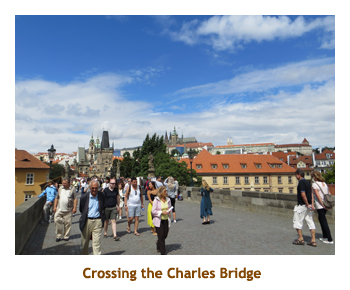
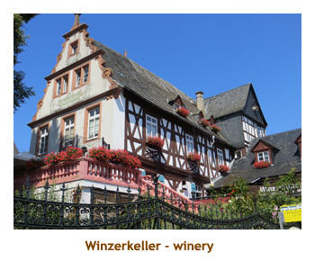
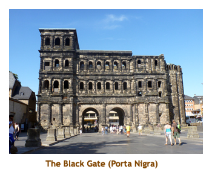

[ Home ] [ Travel ] [ Photography ] [ Pets ] [ Games] [ Rowing] [ Physics ]


Cruising on the AmaDolce
Travel
Cruises
Past Cruises (Diaries)
Future Cruises
Rogues Galleries
Land Trips
Diaries (Land Trips)
Hawai'i - Big Island - 04'01
Hawai'i - Maui - 05'02
Hawai'i - Big Island - 04'03
Hawai'i - Kaua'i - 09'04
Hawai'i - Big Island - 04'06
Hawai'i - Maui - 04'06
Mainland China - 05'07
Phoenix, Arizona - 12'07
Greek Isles - 05'08
Hawai'i - Kaua'i - 09'08
Hawai'i - Big Island - 09'09
Hawai'i - Maui - 05'12
Hawai'i - Big Island - 04'13
Ireland - 08'13
Mexico - Cancun 11'13
France/Belgium/Lux 07'15
Hawai'i - Big Island - 05'17
England / Wales - 06'17
Hawai'i - Big Island - 09'19
Photography
Cameras
Underwater
Pets
Tara
Blackie
Whitey
Muffy
Ollie
Rusty
Fluffy
Rufus&Dufus
Games
Rowing
Physics
Rating (out of 5):
Ship  Food
Service
Itinerary
Food
Service
Itinerary
This cruise was the 3rd leg of a larger trip that also included a Rhone River cruise and a land stay in France and Belgium. When we were looking at river cruises, Marjorie noticed an AMA Waterways cruise that had good T/A rates. It repeated a section of the Rhine River that we had done twice before, but included some new ports as well as a major portion of the Mosel River. We had never done the Mosel before.
I have arbitrarily split this trip into three diaries - a diary covering the first river cruise (Uniworld), Lyon through Avignon, a second diary covering the land portion of our trip, Avignon and Brussels, and this diary of the Rhine/Mosel River cruise, Prague through Luxembourg,I should explain the 4 star ratings versus the 5 star ratings of the Uniworld cruise. We found the Uniworld cruise to be a touch better in all areas, although it was also more expensive. The AMA ship was a notch down from Uniworld in both cabin size and overall decor. But, if you're not into "fancy", both are very nice. In the area of food, both were excellent, although Uniworld seemed to have more variety. The down grading of AMA for food comes from the included liquor package. It was only served in the dining room at lunch and dinner. On Uniworld liquor was included anywhere and anytime, with more variety of available drinks and brands. The wait staff on Uniworld seemed a little more attentive and did "above and beyond" things gladly. And finally the itinerary on AMA was too busy, hitting two or even three towns on the same day. We sometimes felt rushed in town, having to get back for the sailing to the next town. Better to spend more time in each town and do fewer of them.
Once again the cruise was not full - only 129 passengers with room for 146 total.
Good for us, though, looking for T/A rates. As before, we met a number of T/A's on the cruise.
In contrast to the Rhone cruise, temperatures were in the high teens / low 20's each day
(until the last couple of days) with a mix of cloud and sun.
The first half of the cruise was on the Main/Rhine rivers, while the second half
was on the Mosel.
Pre-cruise (July 26) - Getting to Prague
Day 1 (July 27) - A day in Prague
We decided to walk to the nearby Municipal Hall where we had attended a wonderful concert three years ago. We headed down to the basement level to try out a famous restaurant (Plzenska Restaurace) with the "oldest bar in Prague". We both had schnitzel and really enjoyed it. Afterwards we walked a few blocks to the Lidl grocery store, right by the Imperial Hotel where we had stayed before. Along the way we bought some tickets to a small concert happening tonight (6:00 PM) in one of the local churches. Then we continued back to the hotel. It started raining as we approached the hotel and by the time we were in our room it was absolutely pouring (outside, of course). By the time we needed to leave for the concert, the sun had come out again. The concert was in a small chaple and consisted of a string quartet, soprano and organist. The works were baroque nuggets that featured various combinations of the musical instruments and voice. It was excellent. Afterwards we walked back to the hotel and read before bed.
|  |
.
Day 1 (July 28) - To Nuremberg and the ship
Note: The missing passenger was a "continuing" B2B pax who had
taken a ship sponsored tour via train to Munich for the day. He somehow
got separated from his group, and when taking the train back to Nuremberg,
he inadvertantly climbed aboard a train to Salzburg (the wrong direction). He
contacted the ship from Salzburg and had to have a private car drive him
back to the ship (2 hours, 600 Euros).
Day 2 (July 29) - Bamberg and Schweinfurt
We were up at 7:00 to a raw day in Bamberg - a high of 18 (13 right now)
and heavy cloud. We had done Bamberg twice before, both times in the warm
sun, so decided we would stay aboard. We had a leisurely breakfast as we
sailed towards Bamberg. We were supposed to be docked by 8:30, but due to
our late departure from Nuremberg, it was just after 9:00. The walking tour
was planned to leave at 9:00, so they were only late leaving by a few minutes.
As soon as the group had left the ship, the crew undocked the ship and we
set sail for Hassfurt where we would pick up the walkers
(now bus'ers) about 1:15. There were only 8 of us left on the ship so
we had a very quiet sail. We wandered throughout the ship and then I visited
the gym for a workout. Heavenly! We picked up the group at Hassfurt and
then were served a late-ish lunch. It was sunny by the time we were sailing
to Schweinfurt. We arrived there at 4:00 PM and immediately struck out
on a walking tour of the town led by our cruise director. It was a pretty little town.
The CD broke our group into two teams and we tried to pick out the town highlites
(based on a printed handout)
before she pointed them out. For dinner we had signed up for the chef's
table where I had rack of lamb. The table was in a special room away from the
maddening crowd. The event was free of charge, and everyone had an
opportunity to eat there at least once.
After dinner we read for a while and then went to bed.
Day 3 (July 30) - Kitzingen and Wurzburg
We could tell we were getting close to Wurzburg when we could see the Wurzburg (Marienburg) castle up on the hill and the vinyards leading up to it. We drove to the Residenz Palace to start our tour. The palace was built for the prince-bishops and is really huge. We did the usual tour through it , admiring the Tiepolo ceiling. After walking around the surrounding gardens, we hiked downhill by the Marienkappel and town square. It was nice and sunny, so even though I have loads of photos from previous visits, the blue sky made me snap some more. From the town square we wandered to the riverside where our ship would be docking. While we had toured Wurzburg the ship was moving from Kitzingen to Wurzburg. We had beaten the ship here, so had to wait about an hour for it to arrive. For dinner I had pork medallions wrapped in bacon. We had heard that the kitchen would do schnitzel if we asked, and so made a request. The chef said he would make it for us at lunch tomorrow (just Marjorie and me). For the evening entertainment a glassblower had come onboard and demonstrated making various glass objects. He had a hilarious running commentary as he worked.
Day 4 (July 31) - The village of Wertheim
The ship set sail at 1:00 and we were treated to a sunny, blue sky cruise through the Main River valley. We sat on the upper deck with our drinks, and watched the castles and vinyards roll by. There were lots of small villages along the banks. We were given a map handout of the area showing the location of all the castles, and the cruise director announced each one as well. However, I didn't note which castles I took pictures of so I've long since forgotten. It was a beautiful afternoon. For dinner I had a lamb combo - rack and shank. It was very good. The entertainment was a local band and singer that we had seen twice before on previous cruises. They are an excellent group and play quite a variety of music. This time the clarinet player was missing, but the band still sounded great.
Day 5 (Aug 1) - Mainz, Rudesheim and Koblenz
We were up at 6:30 to a busy day. It would be warm, with a high of 29 degrees. Arriving at Mainz meant we had left the Main River and joined the Rhine River. We had two choices for tours today, either half day Mainz and half day Rudesheim, or a full day Heidelberg. We hadn't been to any of these places, so it was a tough decision. We decided on Mainz and Rudesheim. We had breakfast and then headed out at 9:00 on a walking tour of Mainz. At the same time we waved goodbye to the group heading off to Heidelberg. We walked through a bit of modern Mainz and then into the old town. There was a farmer's market in full swing in the town square. We visited a couple of churches, one Protestant and one Catholic. The highlite of the tour was a visit to the Gutenberg Museum. We first viewed two copies of the original Gutenberg Bibles, and then were given a demonstration of early typesetting and printing techniques. We were back to the ship by 12:00 and had lunch as the ship sailed for Rudesheim.
We were soon in Rudesheim. The town was built up a hill, so a tourist train was there to drive us up to the top of the town, specifically to Siegfried's Mechanisches Musikkabinett (Mechanical Music Cabinet) Museum. We were toured through the building and the various mechanical instruments were demo'ed for us. There were lots of piano-like instruments, as well as animals, puppets and dolls playing different instruments. It was really interesting. After leaving the museum, we were given an hour to wind back down through the streets and find the ship below. The town was very touristy and quite crowded. We were back aboard the ship around 4:00 when the Heidelberg group returned from their all day tour. With everyone back on board, we set sail for Koblenz.
|  |
We had a couple of hours of viewing the Rhine gorge from the upper deck. Once again we passed villages and vinyards sparkling in the sunshine. It was quite hot after a while. We had an earlier dinner as we were arriving at Koblenz by 8:00 PM. Koblenz is at the junction of the Rhine and the Mosel. We would be sailing up the Mosel for the remainder of the cruise, so all new territory for us. After dinner we docked in Koblenz and headed off on a one hour walking tour of the town. It was 9:00 PM and starting to get dark, so I didn't take many pictures. We had been in Koblenz on a previous cruise (during the day time) and had a much more intensive tour of the town. This time we needed to get back to the ship before dark. Back aboard ship we called it a day and went to bed.
Day 6 (Aug 2) - Visiting Cochem and Zell
 I walked along a street paralleling the river, out of the tourist area, through more
modern shopping stores and into a residential area. It was almost deserted there.
On the way back I stopped into a deli to get a couple of Cokes to take back onto
the ship. Then I walked down to the river. While walking along the river front,
there was a terrific bang like a gunshot. I turned around towards the castle and
saw a rising cloud of smoke above a cannon. They were firing the cannons! I guess
the parade had reached the castle and they were welcomed with cannon fire.
There were several more bangs and puffs of smoke. Welcome to burgfest!
As I walked across the bridge to the dock side, I ran into Marjorie who had just
been photographing the start of the parade. She took me to the mustard museum
where we bought a couple of jars of specialty mustards. I learned an interesting
fact that the mustard seeds were imported from none other than Canada! I
wouldn't have guessed that. Then we wandered back
to the ship for lunch. After lunch the ship set sail for Zell and we had a few hours
to view more of the Mosel River.
I walked along a street paralleling the river, out of the tourist area, through more
modern shopping stores and into a residential area. It was almost deserted there.
On the way back I stopped into a deli to get a couple of Cokes to take back onto
the ship. Then I walked down to the river. While walking along the river front,
there was a terrific bang like a gunshot. I turned around towards the castle and
saw a rising cloud of smoke above a cannon. They were firing the cannons! I guess
the parade had reached the castle and they were welcomed with cannon fire.
There were several more bangs and puffs of smoke. Welcome to burgfest!
As I walked across the bridge to the dock side, I ran into Marjorie who had just
been photographing the start of the parade. She took me to the mustard museum
where we bought a couple of jars of specialty mustards. I learned an interesting
fact that the mustard seeds were imported from none other than Canada! I
wouldn't have guessed that. Then we wandered back
to the ship for lunch. After lunch the ship set sail for Zell and we had a few hours
to view more of the Mosel River.
We had another early dinner (wiener schnitzel again, this time for everyone) as we arrived in Zell about 7:00 PM. This was the smallest village of our cruise, at 4,300 people. They had organized a wine tasting for us, with tables set up in the town square. We had had beer and wine with dinner, so opted out of the tasting and instead wandered the length of the town with another couple. There were only two streets running the length of the town - one right along the river and one a block up the hill running along the vinyards. All the buildings were between these two streets. There was a black cat theme throughout the village, in honour of the main town winery called Schwartz Katz (Black Cat). As we walked back to the main square, we ran into a small parade provided by the locals consisting of a marching band, followed by the wine queen and other dignitaries, in turn followed by our fellow passengers. What a tasting they had!

|
|||
Day 7 (Aug 3) - A stop in Trier
In Trier we walked through the old town area, stopping first at a royal palace and beautiful attached garden. The palace was being renovated, so not all of the exterior was visible. Then we proceeded to three huge churches almost adjoining one another, but from different eras. One was now Protestant and was very plain inside, whereas the others were very ornate. We ended the tour in the town square and were given free time to explore a bit. It was very hot out, so after doing the main street we sought shelter in a Euro store (analogous to our Loonie stores back home). At the end of the free time we gathered at the Black Gate to wait for the bus. We were bused back to the ship arriving about 6:00. We had our final dinner aboard (I forget what I had) and then packed our bags. We didn't have to put the bags out until the following morning. After a final walkabout, we headed for bed.
|  |
Day 8 (July 19) - Disembarking in Luxembourg
Here endith the diary of our Rhine/Mosel River cruise. You can read about the rest of our trip
in the diaries covering the first river cruise
Lyon to Avignon,
and the land trip from
Avignon to Brussels.